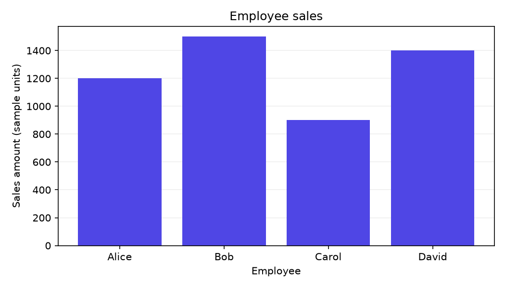

依据华工 2026-01-16 版大纲，自行实现质数输出、销售额统计与柱状图。
本站参考实现数据自拟非官方答案手机可左右滑动代码块，或下载源码在编辑器中完整查看。
这份程序完成原文的固定区间任务，不需要键盘输入；输入异常处理另见下一节变式。
下载 primes.py · 保存后在 IDLE 中按 F5 运行。
def is_prime(number):
if number < 2:
return False
divisor = 2
while divisor * divisor <= number:
if number % divisor == 0:
return False
divisor += 1
return True
def main():
primes = [str(n) for n in range(1, 101) if is_prime(n)]
print(" ".join(primes))
if __name__ == "__main__":
main()2 3 5 7 11 13 17 19 23 29 31 37 41 43 47 53 59 61 67 71 73 79 83 89 97易错点：1 不是质数；range 的右端点不包含在遍历范围内，因此这里用 range(1, 101)。
本站自拟交互：允许输入上界，直接回车采用 100；输入 abc、3.5 或小于 2 的整数时提示重输。输出区间仍从 1 开始。输入上界这一步是为练习异常处理补充的约定，原文未规定这套交互。
本文件复用上一题的 is_prime。请将 primes_with_input.py 和 primes.py 保存到同一个文件夹，再运行 primes_with_input.py。
from primes import is_prime
def read_upper():
while True:
try:
text = input("Upper bound (Enter for 100): ").strip()
upper = 100 if text == "" else int(text)
if upper < 2:
raise ValueError("upper bound must be at least 2")
return upper
except ValueError as error:
print("Invalid input: {}".format(error))
except EOFError:
print("No input; cancelled.")
return None
def main():
upper = read_upper()
if upper is None:
return
primes = [str(n) for n in range(1, upper + 1) if is_prime(n)]
print(" ".join(primes))
if __name__ == "__main__":
main()练习：先输入 abc，看到 Invalid input 后输入 100，应得到上一节的 25 个质数；输入 10 应输出 2 3 5 7。
对应原文：读取与源码同路径的 data.txt，用字典存储每位员工的销售额，计算平均值，再用 matplotlib 画柱状图并设置标题与坐标轴标签。
本站输入约定：UTF-8 文本，每行使用“姓名:金额”，也接受全角冒号。姓名必须非空且唯一，金额须为有限非负数；空行跳过，其他错误会报告。原文未附数据文件，以下数据为自拟。
下载自拟 data.txt，与 sales_report.py 放在同一文件夹。
Alice:1200
Bob:1500
Carol:900
David:1400Path(__file__).resolve().parent 定位脚本目录，再从同目录读取 data.txt。下载 sales_report.py · 本题用到 matplotlib，未用到 pandas 或 numpy 的直接调用。
from pathlib import Path
import math
import matplotlib.pyplot as plt
def read_sales(path):
sales = {}
with path.open("r", encoding="utf-8-sig") as stream:
for line_number, line in enumerate(stream, 1):
line = line.strip()
if not line:
continue
parts = line.replace("\uff1a", ":").split(":")
if len(parts) != 2:
raise ValueError(
"line {}: expected name:amount".format(line_number)
)
name = parts[0].strip()
if not name or name in sales:
raise ValueError(
"line {}: empty or duplicate name".format(line_number)
)
try:
amount = float(parts[1].strip())
except ValueError:
raise ValueError(
"line {}: amount must be numeric".format(line_number)
)
if not math.isfinite(amount) or amount < 0:
raise ValueError(
"line {}: amount must be finite and nonnegative".format(
line_number
)
)
sales[name] = amount
if not sales:
raise ValueError("No sales records.")
return sales
def draw_sales(sales, image_path):
names = list(sales)
amounts = [sales[name] for name in names]
figure, axes = plt.subplots(figsize=(7, 4))
axes.bar(names, amounts, color="#4f46e5")
axes.set_title("Employee sales")
axes.set_xlabel("Employee")
axes.set_ylabel("Sales amount (sample units)")
axes.set_ylim(bottom=0)
axes.grid(axis="y", alpha=0.2)
axes.set_axisbelow(True)
figure.tight_layout()
figure.savefig(str(image_path), dpi=150)
plt.show()
plt.close(figure)
def main():
folder = Path(__file__).resolve().parent
try:
sales = read_sales(folder / "data.txt")
except (OSError, UnicodeError, ValueError) as error:
print("Cannot read data: {}".format(error))
return 1
average = sum(sales.values()) / len(sales)
for name, amount in sales.items():
print("{}: {:.2f}".format(name, amount))
print("Average: {:.2f}".format(average))
image_path = folder / "sales_report.png"
draw_sales(sales, image_path)
print("Chart saved as sales_report.png")
return 0
if __name__ == "__main__":
raise SystemExit(main())Alice: 1200.00
Bob: 1500.00
Carol: 900.00
David: 1400.00
Average: 1250.00
Chart saved as sales_report.png
易错点：data.txt 采用冒号，不是 CSV 逗号分隔；先保存 .py 文件再运行，避免交互式粘贴时没有 __file__；字典键使用姓名，本例遇到重名会报错。
python -m pip install matplotlib
python sales_report.py验证记录：固定区间输出、非数值输入、错误上界、空文件、重复姓名、错误分隔符和非法金额均已检查；使用自拟数据实际生成柱状图，并核对平均值、柱高、图题与轴标签。
可对照 Python pathlib 文档 ↗及 matplotlib 柱状图文档 ↗理解相关 API。代码适合本地练习，正式考试仍按题面要求调整。